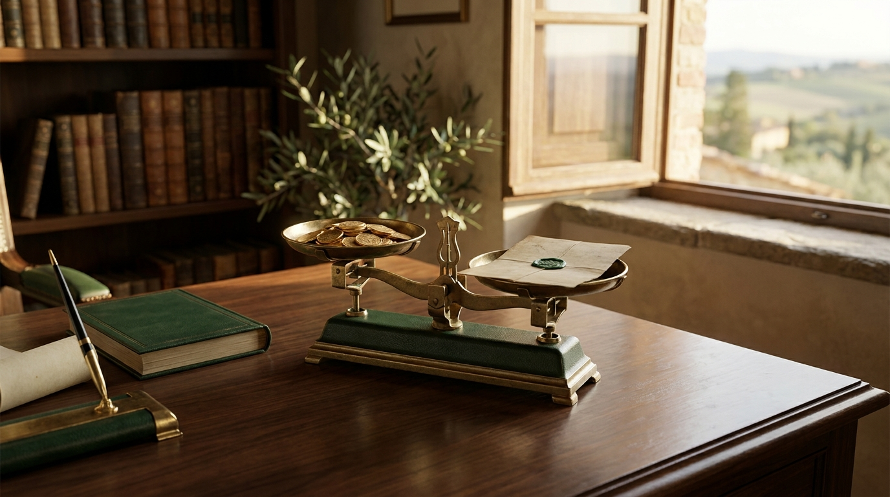

Conto cointestato: il cointestatario che non versa può prelevare tutto?
Un conto cointestato non significa che ciascun titolare possa disporre liberamente dell'intero saldo. La Cassazione ribadisce che la presunzione di pari quote è superabile: se la provvista proviene da un solo soggetto, il prelievo totale da parte dell'altro è illegittimo e va restituito. Una distinzione decisiva per coniugi, conviventi ed eredi.

Il fatto e perché conta
La questione è frequente quanto sottovalutata: due persone aprono un conto corrente cointestato. Uno solo dei due alimenta il conto con il proprio reddito; l'altro figura come titolare ma non versa nulla. Cosa accade se il cointestatario "non contribuente" preleva l'intera giacenza?
La Corte di Cassazione conferma un principio già consolidato: la cointestazione attribuisce a ciascun titolare un potere di disposizione, ma non sposta automaticamente la proprietà del denaro. Chi preleva somme non proprie è tenuto a restituirle.
Inquadramento normativo
Il punto di partenza è l'art. 1854 del codice civile, che disciplina il conto cointestato con facoltà di disporre disgiuntamente: ciascun intestatario può operare da solo sul rapporto verso la banca. Questa è però una regola che riguarda i rapporti esterni, cioè tra titolari e istituto di credito. Non dice nulla su chi, tra i cointestatari, sia effettivamente proprietario delle somme.
Sul piano dei rapporti interni entra in gioco l'art. 1298 c.c., dettato in materia di obbligazioni solidali. Il secondo comma stabilisce che le quote dei condebitori o concreditori si presumono uguali, "se non risulta diversamente". È una presunzione relativa (juris tantum): può essere superata con prova contraria.
Da qui la conclusione della giurisprudenza. La cointestazione fa presumere che il saldo appartenga ai titolari in parti uguali. Ma se uno dimostra che l'intera provvista proviene esclusivamente dal proprio patrimonio, quella presunzione cade. Il cointestatario che ha prelevato denaro non suo si trova in posizione di debitore verso l'altro.
Cosa cambia in concreto
La differenza tra potere di prelievo e proprietà del denaro è il cuore della vicenda. La banca esegue l'operazione perché ciascun titolare può disporre disgiuntamente. Ma la legittimità verso la banca non equivale alla legittimità nei rapporti interni.
In pratica:
- Per i coniugi e i conviventi: chi versa su un conto comune i propri risparmi non li perde automaticamente. Se il partner preleva tutto, può essere chiamato a restituire la parte che non gli spetta, sempre che si dimostri l'origine dei fondi.
- Per gli eredi: alla morte di un cointestatario, gli eredi non subentrano nella metà del saldo per automatismo. Se il defunto aveva alimentato integralmente il conto, l'intera giacenza può rientrare nell'asse ereditario, riducendo o azzerando la quota del cointestatario superstite.
- Per chi ha aperto un conto "di comodo": la cointestazione formale, magari per ragioni pratiche o di gestione, non trasferisce proprietà. Ma in assenza di prova sull'origine dei fondi, scatta la presunzione di parità, con esiti che possono sorprendere.
Il nodo è sempre probatorio. La presunzione di pari quote opera fino a prova contraria. Senza documentazione che ricostruisca i versamenti, chi ha alimentato il conto rischia di vedersi riconosciuta solo la metà.
La prova dell'origine dei fondi
Dimostrare la provenienza esclusiva del denaro non è banale. Servono elementi oggettivi: estratti conto, accrediti di stipendio o pensione, bonifici da altri rapporti intestati al solo contribuente, documentazione di vendite o eredità confluite sul conto.
Il semplice fatto che un solo titolare lavorasse o avesse redditi più elevati non basta da solo: occorre collegare i versamenti specifici a quella provenienza. La ricostruzione va impostata con attenzione, perché l'onere grava su chi vuole superare la presunzione di parità.
Cosa fare in concreto
- Conserva la tracciabilità dei versamenti: archivia estratti conto e documentazione che colleghi le somme alla loro origine. È la prova decisiva nei rapporti interni.
- Valuta con attenzione l'apertura di conti cointestati: la firma disgiunta comporta il rischio che l'altro titolare prelevi l'intero saldo. Considera la firma congiunta se vuoi un controllo reciproco.
- In presenza di prelievi sospetti, agisci tempestivamente: documenta movimenti e saldi prima che la situazione si modifichi ulteriormente.
- Negli scenari ereditari, ricostruisci la storia del conto: prima di accettare ripartizioni "automatiche" al 50%, verifica chi abbia effettivamente alimentato il rapporto.
- Formalizza gli accordi tra cointestatari: una scrittura che chiarisca la titolarità delle somme riduce il contenzioso futuro.
La cointestazione è uno strumento utile, ma va maneggiato con consapevolezza. Confondere il potere di disporre con la proprietà del denaro espone a contestazioni che si decidono, alla fine, sul terreno della prova.
Disclaimer
Contributo informativo a cura di Tamburro & Partners - Avv. Giuseppe Tamburro. Non costituisce parere legale.
Ogni contratto ha il suo equilibrio.
Se vuoi una revisione delle clausole o una redazione su misura, scrivi allo studio. Ti rispondiamo entro un giorno lavorativo.